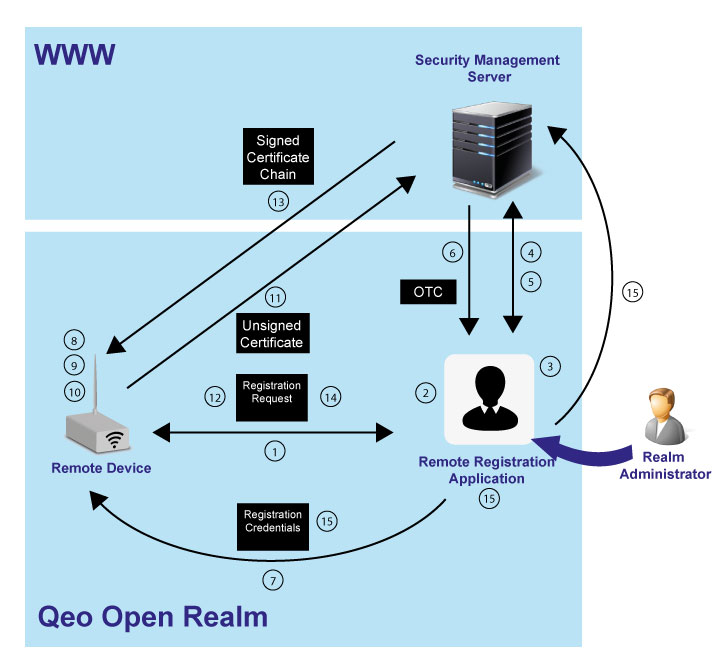

About The Remote Registration Procedure
The Remote Registration procedure allows a Realm Administrator to add devices to a given Qeo realm using a Remote Registration App. The latter is not available as standalone app, but is embedded in the Android Qeo Service. For convenience, Remote Registration App is used instead of Remote Registration Functionality. This remote registration functionality makes it possible to add, for instance, a headless device such as a gateway to a specific realm. However, this procedure is not limited to headless devices but can also be used for other devices as well.
Depending on the platform integration, a device can use the Remote Registration procedure or the Direct Registration procedure.
How Does It Work
The following actors are involved in the procedure:
- The Remote Device to be registered.
- The Realm Administrator who makes use of the Remote Registration App.
- The Remote Registration App which runs on a device owned by the Realm Administrator.
- The Security Management Server (SMS).
The Remote Device uses SCEP to communicate with the SMS, as in the Direct Registration procedure. On the other hand, the Remote Registration App uses REST to communicate with the SMS.
The Remote Device and the Remote Registration App exchange information via Qeo Topics on the Open Realm. The Open Realm does not require authentication and instances of topics exchanged on the Open Realm are not encrypted. However, some instance data fields have to be encrypted, e.g., the OTC in the registration credentials which is encrypted by the Remote Device's public key. Moreover, the Open Realm can only be used for the Remote Registration procedure where only two Qeo topics are allowed, namely, the RegistrationRequest topic and the RegistrationCredentials topic.
Diagram
The interaction diagram below gives an overview of the Remote Registration procedure. It is assumed that the Realm Administrator has already created a Qeo realm:

Procedure
The procedure is described below:
- The Remote Device publishes a RegistrationRequest topic instance. This can be triggered, for example, right after the Remote Device has booted or whenever a specific button is pressed on that device. For more information on this, please refer to the platform integration section.
The RegistrationRequest topic contains the following data fields:- The device ID, a unique identifier of the Remote Device.
- A public key generated by the Remote Device.
- The suggested user name, i.e. a proposal for the Remote Device user-name.
- The registration status which is initially set to "unregistered".
- The Remote Registration App reads from the RegistrationRequest topic and updates its UI accordingly.
- If the Remote Device user is not yet part of the realm, the Realm Administrator adds him or her to the realm. This occurs through the Remote Registration App which in its turn passes on the request to the SMS via REST calls.
- The SMS confirms the request and the Remote Registration App updates its UI accordingly.
- The Realm Administrator adds the Remote Device to the realm under a given user. This occurs through the Remote Registration App which in its turn passes on the request to the SMS.
- The SMS sends back a One Time Code (OTC).
- The Remote Registration App publishes a RegistrationCredentials topic instance. The RegistrationCredentials topic contains the following data fields:
- The device ID as provided in the Registration Request instance.
- The Remote Device's public key as provided in the Registration Request instance.
- An OTC that was encrypted using the Remote Device's public key.
- The URL to reach the SMS and carry out the device registration.
- The realm name.
- The Remote Device reads the RegistrationCredentials topic instance and matches the key fields with the RegistrationRequest.
- Optionally, the Remote Device user can be asked to confirm whether he or she wants to register his or her device to the realm. For more information on this, please refer to the platform integration section.
- The Remote Device user confirms.
- The Remote Device decrypts the OTC and uses it to request a signed certificate from the SMS.
- The Remote Device updates the RegistrationRequest topic instance's state field to "registering".
- The SMS verifies the OTC and sends a signed certificate back to the device.
- The device removes the RegistrationRequest topic instance.
- The Remote Registration App is notified about that removal and consequently removes the corresponding RegistrationCredentials topic instance. It also retrieves the list of registered devices from the SMS to confirm that the device is actually registered, and updates its UI accordingly.
Error Handling
Registration window
The Remote Device only publishes the RegistrationRequest topic instance for a limited amount of time, namely, the registration window. The RegistrationRequest is published on the Qeo Open Realm, and thus can be read by every Qeo Actor which is part of the Qeo Open Domain. In order to prevent a malicious Actor from abusing this information the registration window is limited in time.
Error code
In case something goes wrong at the Remote Device side, the device updates the RegistrationRequest topic instance's error code field. This allows the Remote Registration App to inform the Realm Administrator of what went wrong, and the Realm Administrator can consequently take the appropriate action(s).
{kind=link}
{kind=link}